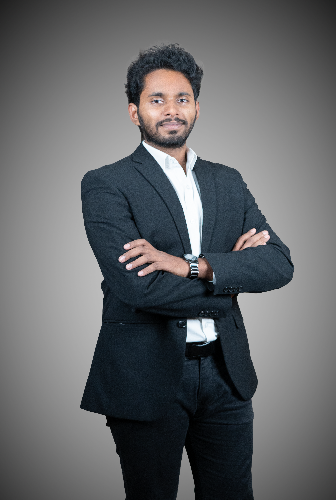

I engineer the intelligence that drives modern production. Operating at the intersection of industrial automation and digital transformation, I create seamless, data-driven environments where physical hardware and digital logic work in perfect synchronization.

My journey in engineering began at NIT Andhra Pradesh, where I developed a deep fascination with the electrical systems that power our world. This curiosity evolved into a professional mission: to solve the complex OT-IT handshake that defines the modern industrial landscape.
Currently, as part of the iPMP at NAMTECH, I am specializing in Smart Manufacturing and AI. I focus on transforming traditional factory floors into autonomous, data-driven ecosystems by integrating industrial hardware with advanced digital intelligence.
Engineered a high-availability infrastructure featuring MRP Ring Redundancy for sub-millisecond recovery. Hardened OT security through NETMAP masking and firewall protocols to bridge factory assets with cloud dashboards.
Retrofitted legacy production lines with Diffusive, Ultrasonic and Retro-Reflective sensors for autonomous part detection. Integrated speed-control logic and real-time visualization through a centralized Node-RED dashboard.
Identified and resolved bottlenecks in a cyber-physical line by bypassing standard MES UI limitations. By manipulating SQL database production logic directly, I implemented a custom load-balancing algorithm to reroute order positions dynamically.
Ready to discuss the OT-IT handshake, industrial cybersecurity architecture in smart manufacturing.